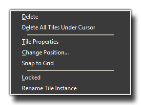

Tiles
This section deals with tiles and how to use them in the room editor.
In many games you will want to have nice looking backgrounds, made up of many details and that are eyecatching and intersting to the player. For example, in a maze game, the walls of the maze should nicely match up, and
in platform games you like to see beautifully drawn platforms, trees, etc. However, to create hundreds of static backgrounds would take aforever, and also not be very efficient as they would need a lot more device memory, nor
would creating hundreds of individual objects with different sprites be a very good idea. So, instead, GameMaker:Studio allows you to use tiles.
Tiles are a purely graphical resource that have very few properties and none of the overheads that accompany an object, and so they are processed and dealt with much faster by GameMaker:Studio when the game
is run on the target device. A simple tile would be one for a wall in a maze, where your game has just one wall object with a square sprite assigjned to it for collisions. This object is then flagged as invisible so that when playing
the game you can't see it, and you would then create some nice tiles that cover the places where the wall objects are and make your levels look great.
You can use this technique for any graphic that does not have to change its shape or position (you cannot use it when the image must be animated - for that you must use an instance), and you can create some incredibly
beautiful graphics for your game with very few resources just by mixing and matching tiles on each level. It should be noted that tiles need to be designed properly to work without any graphical errors and this subject is covered in the
section - More About Backgrounds.
The Tiles Tab
 To add tiles to your room you first need to add a background resource to your game that has been properly prepared to contains the tiles you need, and when adding the background resource indicate that it must be used
as a tile set in the background properties. For more details on how to load a background as a tileset, please see the section Using GameMaker:Studio : Backgrounds.
To add tiles to your room you first need to add a background resource to your game that has been properly prepared to contains the tiles you need, and when adding the background resource indicate that it must be used
as a tile set in the background properties. For more details on how to load a background as a tileset, please see the section Using GameMaker:Studio : Backgrounds.
If you look at the tiles tab in the room editor (also shown above), you can see at the top left the current background being used for tiling, but this can be changed by clicking on the menu button underneath. A list will be
brought up which contains all the background resources in your game, and from there you can select the one you wish to use. Note, that if you select a background that is not flagged as being a tileset in the properties, you can still
place it as a tile, but it will be the whole image that is placed, and not just a part.
Selecting a tile and adding it to the room is a simple matter of clicking on the background image itself to select the part you need (this will be automatic and depends on the settings of the background resource), and then clicking
in the room on the right to place it. If you have previously placed tiles at the same place (or if they over-lap) within the room and at the same depth too, then the tile underneath will be removed by default, but this behaviour
can be switched off by un-checking the Delete Underlying box.
When placing tiles in the room, you place with the left mouse button and delete with the right, but you also have a few extra commands :
- hold the <Shift> key to add multiple tiles one after another.
- hold the <Ctrl> key and click on a tile to move it to a new position.
- hold the <Alt> key to tempoararily switch off snapping to the gird.
If you hold down the <Ctrl> key and right click on a tile with the mouse, the following menu will open :

The commands available are very similar to those that open when you right click an instance and are as follows :
- Delete : This will delete the tile at the current depth.
- Delete All : This will delete all tiles found at this position in the room (at the same depth).
- Tile Properties : This will open the following window -
 which allows you to easily change some of the most common tile properties, like scale, blending and alpha.
which allows you to easily change some of the most common tile properties, like scale, blending and alpha.
- Change Position : Opens a window where you can input precise x and y coordinates for the tile.
- Snap to Grid : This will snap the tile to the nearest grid square as set by the room properties toolbar.
- Locked : This locks the tile in position and also prevents it from being deleted. You can unlock a tile again by re-selecting this option.
- Rename Tile Instance : You can use this to set a constant which will always point to this tile unless you delete it through code or change rooms.
In some situations you might want to put a part of the background tileset in the room that is not exactly the size of a standard tile, or that consists of multiple tiles, or even one that is offset from the standard tile grid.
Well, this can be done too! In the top-left background image press the left mouse button while holding the <Alt> key. Now you can drag the mouse to create rectangular area, which you can then place in the room in the
same way as any normal tile. If you want the area you create to snap to the tiles, then hold the <Shift> key instead when dragging (note that this works best when there is no separation between the tiles). If you want
to select an area that is multiple of the room grid size, hold the <Ctrl> key rather than the <Shift> key, and it should be noted that you can actually change the key you hold during the dragging, which can be very useful.
Tile Depth
Tiles can be placed in layers at different depths, and if you look at the bottom of the tiles tab in the room editor you see the current depth you are placing them at. Default for this is 1000000 which is normally behind all
instances (the higher the number, the further "behind", and the lower the number the further "in fromt"). You can use the Add button to add new tile layers, each with a different depth which you define, and in this
way you can create different layers of tiles, and even objects if you also give the objects different depths so they are between the different tile layers. If you press Delete you can delete a tile layer together with all its
tiles, but you must always have at least one layer, so even if you delete the last one, GameMaker:Studio will recreate a new, empty one for you again. If you press Change you can change the depth of a tile
layer, which if you have given it the same depth as another layer, will merge the two sets of tiles together on the one layer.
© Copyright YoYo Games Ltd. 2013 All Rights Reserved